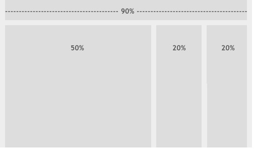

Układ
płynny

Polega na tym, że szerokość strony dostosowywane się do rozdzielczości ekranu i szerokości okna przeglądarki.Tworzymy go wpisując w właściwość width wartość procentową. width:45%; Można ustawić również minimalną szerokość danego bloku. min-width:240px; Również przydaje się funkcja calc. width:calc(100%-20px);